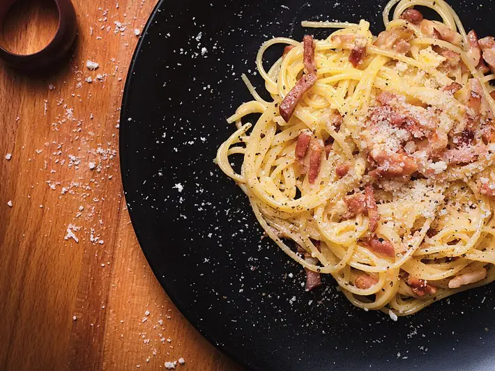

Фото: Javier Somoza, CC BY-SA 4.0

Спагетти карбонара
Паста с беконом, желтками и пармезаном без сливок
25 мин2 порц.962 ккал на порциюБ 49 · Ж 52 · У 71Итальянская кухня
Продукты на 2 порц.
- Макароны200 г
- Бекон150 г
- Яйцо куриное3 шт
- Пармезан60 г
- Перец чёрный молотый0,5 ч. л.
- Соль2 ч. л.
- Вода2000 мл
Как готовить
- Вскипятите воду, посолите и сварите спагетти на 1 минуту меньше, чем указано на упаковке.
- Бекон нарежьте полосками и обжарьте на сухой сковороде на среднем огне 5-6 минут до хрустящих краёв. Снимите с огня.
- Взбейте 1 яйцо и 2 желтка с тёртым пармезаном и большим количеством молотого перца.
- Отлейте 100 мл воды от пасты, спагетти откиньте и сразу переложите в сковороду к бекону.
- Сковорода должна быть снята с огня и чуть остыть 1 минуту. Влейте яичную смесь и быстро перемешивайте, подливая воду от пасты по ложке, пока соус не станет кремовым.
- Подавайте сразу, посыпав пармезаном и перцем.
Совет. Главная ошибка: вылить яйца на горячую сковороду на огне, тогда получится омлет. Белки, что остались, пригодятся для омлета.